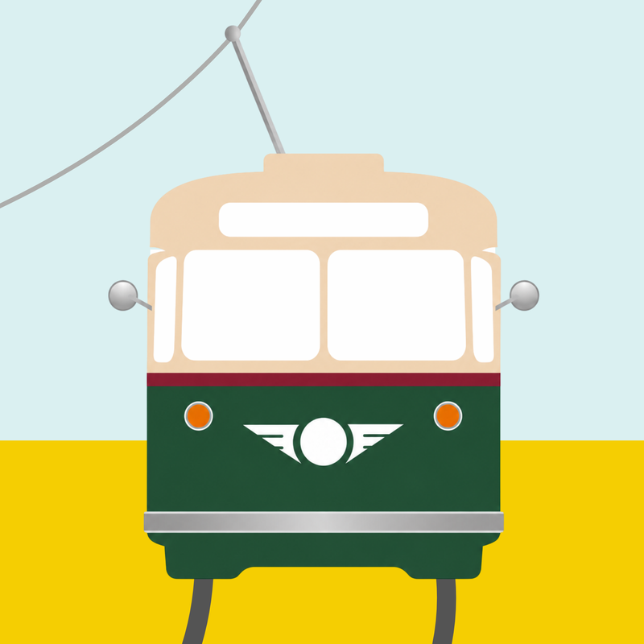

Philly Trolleys and the G Trolley Tracker Website
Hi! I’m Cris. I live here in Philly. I’ve mostly worked in education, but in my free time I love to make public sector-focused apps that make the world a better place…especially when it comes to public transit.
I created this app because I’m a public transit advocate, because trolleys, especially the PCC Trolleys on Girard Avenue, are deeply cool, and because I sincerely believe that more Philly trolley riders = more Philly trolley lines in our city’s future.
Whether you are a longtime city resident, a commuter, a railfan, a tourist, or just a person trying to get a ride to wherever you are going, I hope you use this app to catch as many trolleys as you can.
If you have any suggestions, please reach out through the support page. If it involves popularizing trolleys in Philadelphia, I guarantee I’m interested. I also encourage you to support the hardworking people of SEPTA however you can. They are, by and large, a credit to our wonderful city.
Thanks!
Not affiliated with SEPTA. Vehicle positions and schedules come from SEPTA’s public data feeds.